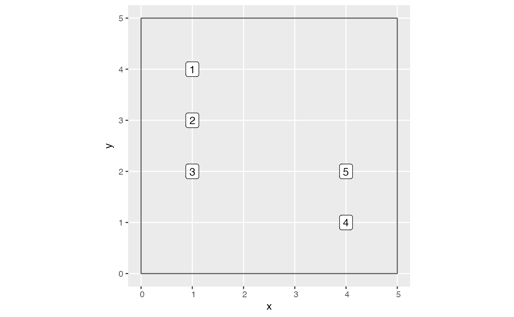

R/data_processing_functions.R
create_focal_vs_comp.Rd"Focal versus competitor trees" data frames are the main data frame used for analysis. "Focal trees" are all trees that satisfy the following criteria
Were alive at both censuses
Were not part of the study region's buffer as computed by add_buffer_variable()
Were not a resprout at the second census. Such trees should be coded as
"R" in the codes2 variable (OK if a resprout at first census)
For each focal tree, "competitor trees" are all trees that (1) were alive at
the first census and (2) within comp_dist distance of the focal tree.
create_focal_vs_comp(growth_df, comp_dist, blocks, id, comp_x_var)
| growth_df | A |
|---|---|
| comp_dist | Distance to determine which neighboring trees to a focal tree are competitors. |
| blocks | An sf object of a |
| id | A character string of the variable name in |
| comp_x_var | A character string indicating which numerical variable to use as competitor explanatory variable |
focal_vs_comp data frame of all focal trees and for
each focal tree all possible competitor trees. In particular, for
each competitor tree we return comp_x_var. Potential examples of
comp_x_var include
basal area or
estimate above ground biomass.
In order to speed computation, in particular of distances between all
focal/competitor tree pairs, we use the cross-validation blockCV
object to divide the study region into smaller subsets.
Other data processing functions:
compute_growth(),
create_bayes_lm_data()
library(ggplot2) library(dplyr) library(stringr) library(sf) library(sfheaders) library(tibble) # Create fold information sf object. SpatialBlock_ex <- tibble( # Study region boundary x = c(0, 0, 5, 5), y = c(0, 5, 5, 0) ) %>% # Convert to sf object sf_polygon() %>% mutate(folds = "1") # Plot example data. Observe for comp_dist = 1.5, there are 6 focal vs comp pairs: # 1. focal 1 vs comp 2 # 2. focal 2 vs comp 1 # 3. focal 2 vs comp 3 # 4. focal 3 vs comp 2 # 5. focal 4 vs comp 5 # 6. focal 5 vs comp 4 ggplot() + geom_sf(data = SpatialBlock_ex, fill = "transparent") + geom_sf_label(data = growth_toy, aes(label = ID))# Return corresponding data frame growth_toy %>% mutate(basal_area = 0.0001 * pi * (dbh1 / 2)^2) %>% create_focal_vs_comp(comp_dist = 1.5, blocks = SpatialBlock_ex, id = "ID", comp_x_var = "basal_area")#> # A tibble: 5 × 7 #> focal_ID focal_sp dbh foldID geometry growth comp #> <int> <fct> <dbl> <fct> <POINT> <dbl> <list> #> 1 1 tulip poplar 40 1 (1 4) 1 <tibble [1 × 4]> #> 2 2 red oak 25 1 (1 3) 2 <tibble [2 × 4]> #> 3 3 red oak 30 1 (1 2) 1 <tibble [1 × 4]> #> 4 4 tulip poplar 35 1 (4 1) 3 <tibble [1 × 4]> #> 5 5 tulip poplar 20 1 (4 2) 2 <tibble [1 × 4]># Load in growth_df with spatial data # See ?growth_ex for attaching spatial data to growth_df data(growth_spatial_ex) # Load in blocks data(blocks_ex) focal_vs_comp_ex <- growth_spatial_ex %>% mutate(basal_area = 0.0001 * pi * (dbh1 / 2)^2) %>% create_focal_vs_comp(comp_dist = 1, blocks = blocks_ex, id = "ID", comp_x_var = "basal_area")